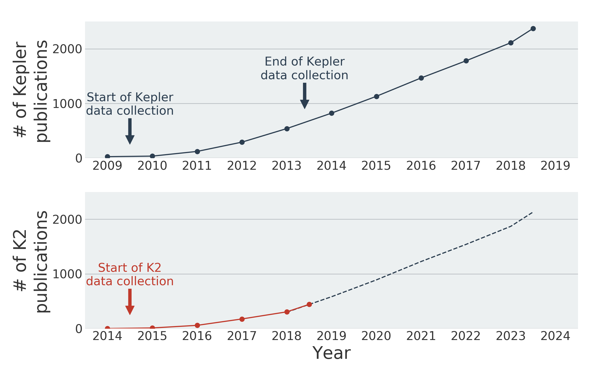

On Monday, July 2nd, prompted by an anomalous drop in fuel pressure, the Kepler team paused the science observations for K2 Campaign 18 and commanded the spacecraft into a no-fuel-use safe mode. It will remain in this mode until August 2nd, when the Kepler team will use the normally scheduled DSN time to downlink the Campaign 18 data. This course of action was taken to preserve the 51 days of high-quality Campaign 18 data that are currently held on the spacecraft’s solid state recorder.
NASA is continuing to prepare for Campaign 19 which is scheduled to begin August 6th.
General questions related to Kepler’s low fuel state have previously been answered in the Kepler Fuel Status FAQ. The extra FAQ below answers questions that are specific to the current and future K2 Campaigns.
Will the quality of Campaign 18 data be affected?
No, the first 51 days of Campaign 18 have been flawless. The spacecraft performed nominally until the project commanded it into its no-fuel "nap mode" in response to a drop in fuel pressure.
When will Campaign 18 data become available?
The project currently plans to downlink the data between August 2 and 6, 2018. The raw data are expected to become available from the data archive at MAST within a few days thereafter, and the calibrated data products are expected to be released towards Q4 2018.
Will Campaign 19 continue?
NASA is continuing to prepare for Campaign 19. If the observed drop in fuel pressure is indicative of the spacecraft running out of fuel, then Campaign 19 may not be completed.
Should I continue to use my telescope resources to augment Campaign 19 data?
Several science programs seek to complement Campaign 19 data using simultaneous observations carried out using other telescope facilities. The PI's of these programs can phone the Kepler GO office at +1-650-604-2784 to request guidance as needed.
Should I still propose targets for Campaign 20?
Yes! NASA will continue to plan for future campaigns until the spacecraft can no longer operate nominally. We expect to move the Campaign 20 target proposal deadline to August 16th, 2018, i.e. beyond the start of Campaign 19.
Does low fuel mark the end of Kepler’s discoveries?
Not at all! We expect that Kepler’s data set will continue to yield discoveries for years to come, and that many planets are yet to be discovered (e.g. 27 new planets from Campaign 10 were announced just last week). NASA will continue to support and fund the analysis of the Kepler and K2 data sets beyond the end of spacecraft operations. Extrapolating from the success of Kepler's original mission, we expect that K2's data set will yield more than 1,000 scientific publications over the coming years (cf. figure below).

Figure: extrapolating from the scientific productivity of Kepler's original mission (top panel), we expect that more than 1,000 publications will utilize K2 data over the coming years (bottom panel).